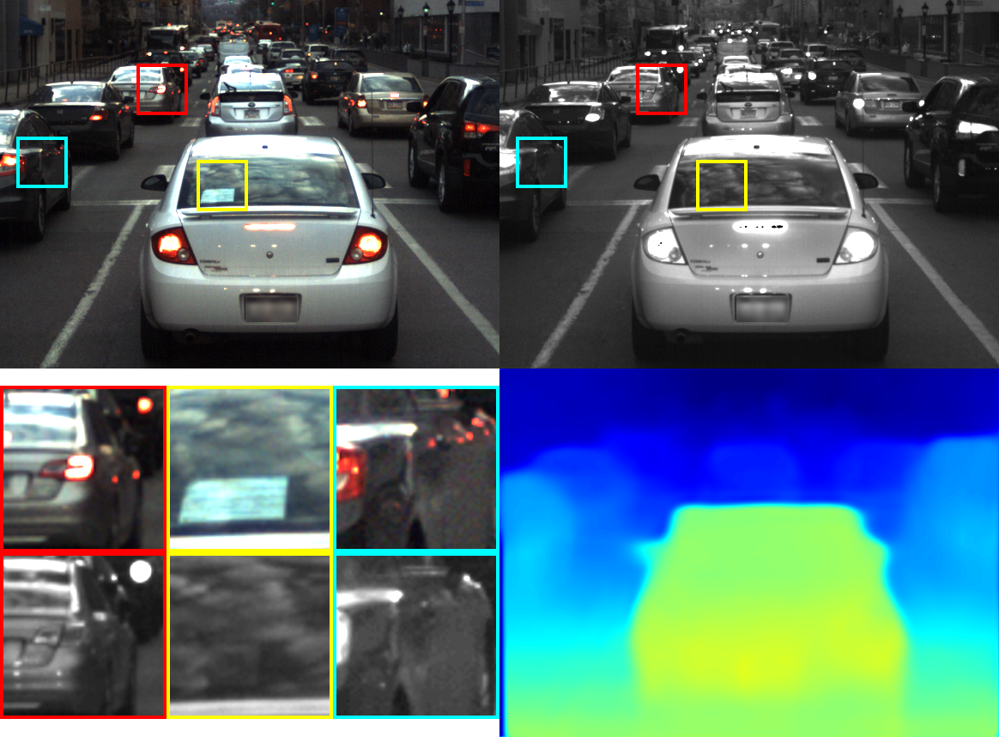
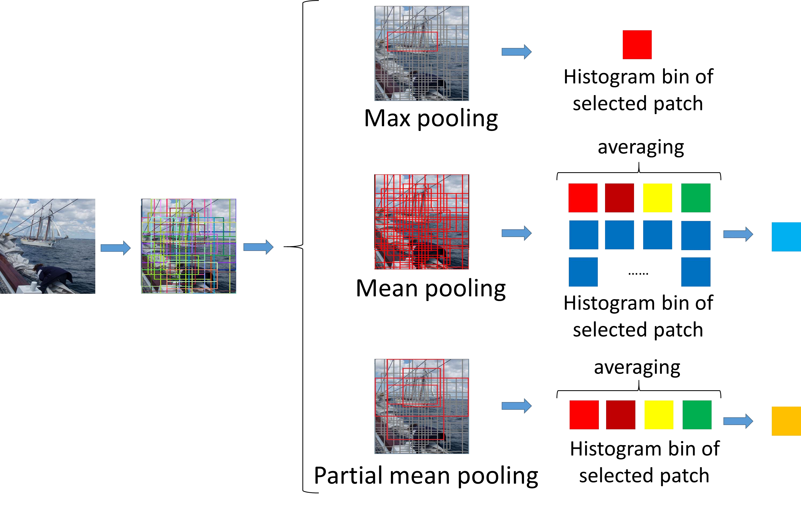

Tiancheng ZhiResearch Scientist at ByteDanceEmail: tiancheng.zhi@bytedance.com [Resume] [Google Scholar] [GitHub] |
About Me
- I'm a research scientist at ByteDance Intelligent Creation Lab.
- Before joining ByteDance, I was a PhD student at Computer Science Department, Carnegie Mellon University, co-advised by Prof. Srinivasa Narasimhan and Prof. Martial Hebert.
- Prior to coming to CMU, I earned my B.S. Degree from School of EECS, Peking University in 2016, under the supervision of Prof. Ling-Yu Duan.
- My research interest lies at the intersection of computer vision and computer graphics. Currently I mainly focus on avatar generation.
- Internships: I am always looking for strong graduate students to collaborate with. If you are interested in interning at ByteDance/TikTok with me, send me an email detailing what your research interests are, and what you would like to work on during the internship.
Products
| TikTok AI Avatar, 2023 Create AIGC profile pictures from 3-10 photos in minutes |
|
| TikTok AI Portrait, 2022 Sticker effect creating AIGC portrait in seconds with one single selfie |
|
| TikTok Avatar, 2022 Personalized 3D avatar with realtime expression tracking |
Publications
| AgileAvatar: Stylized 3D Avatar Creation via Cascaded Domain Bridging Shen Sang, Tiancheng Zhi, Guoxian Song, Minghao Liu, Chunpong Lai, Jing Liu, Xiang Wen, James Davis, Linjie Luo ACM SIGGRAPH Asia Conference (SIGGRAPH Asia Conference Track), 2022. [Paper] |
|
 |
Learning Continuous Implicit Representation for Near-Periodic Patterns Bowei Chen, Tiancheng Zhi, Martial Hebert, Srinivasa G. Narasimhan European Conference on Computer Vision (ECCV), 2022. [Paper] [Code] |
 |
Semantically Supervised Appearance Decomposition for Virtual Staging from a Single Panorama Tiancheng Zhi, Bowei Chen, Ivaylo Boyadzhiev, Sing Bing Kang, Martial Hebert, Srinivasa G. Narasimhan ACM Transactions on Graphics (SIGGRAPH Journal Track), 2022. [Paper] [Project] [Code] |
| TexMesh: Reconstructing Detailed Human Texture and Geometry from RGB-D Video Tiancheng Zhi, Christoph Lassner, Tony Tung, Carsten Stoll, Srinivasa G. Narasimhan, Minh Vo European Conference on Computer Vision (ECCV), 2020. [Paper] [Project] [Talk] [Data (please contact Minh Vo)] |
|
| Multispectral Imaging for Fine-Grained Recognition of Powders on Complex Backgrounds Tiancheng Zhi, Bernardo R. Pires, Martial Hebert, Srinivasa G. Narasimhan IEEE Conference on Computer Vision and Pattern Recognition (CVPR), 2019. Oral Presentation [Paper] [Project] [Code] [SWIRPowder Dataset] [Supp] [Talk] [Poster] |
|
|  | Deep Material-aware Cross-spectral Stereo Matching Tiancheng Zhi, Bernardo R. Pires, Martial Hebert, Srinivasa G. Narasimhan IEEE Conference on Computer Vision and Pattern Recognition (CVPR), 2018. [Paper] [Project] [Code(v2)] [PittsStereo Dataset] [Supp] [Video] [Poster] |
| Real-time, Short-wave, Infrared Hyperspectral Conforming Imaging Sensor for the Detection of Threat Materials Matthew P. Nelson, Shawna K. Tazik, Patrick J. Treado, Tiancheng Zhi, Srinivasa Narasimhan, Bernardo Pires, Martial Hebert SPIE Commercial + Scientific Sensing and Imaging, 2018. [Paper] |
|
|  | Two-stage Pooling of Deep Convolutional Features for Image Retrieval Tiancheng Zhi, Ling-Yu Duan, Yitong Wang, Tiejun Huang IEEE International Conference on Image Processing (ICIP), 2016. [Paper] [Poster] |
Presentations
 |
Add Me to the Painting Tiancheng Zhi, Yanzhe Yang Artificial Intelligence: Representation and Problem Solving Course, 2016. [Poster] |
| Understanding Neural Representations in Early Visual Areas using Convolutional Neural Networks Yimeng Zhang, Corentin Massot, Tiancheng Zhi, George Papandreou, Alan Yuille, Tai Sing Lee Neuroscience (SfN), 2016. [Poster] |